국민건강영양조사 vs 공군 조종사 건강검진: 대사증후군, 지방간 위험 비교 사례
2026-10-30
1. AI 활용 방식
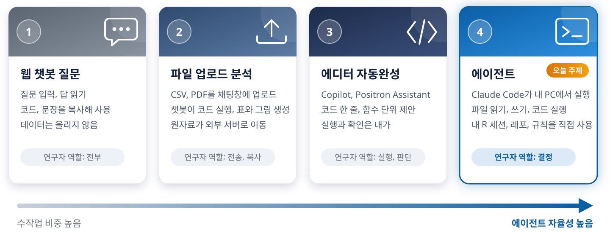
1. AI 활용 방식
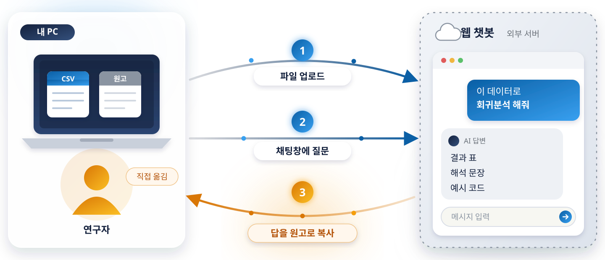
1. AI 활용 방식
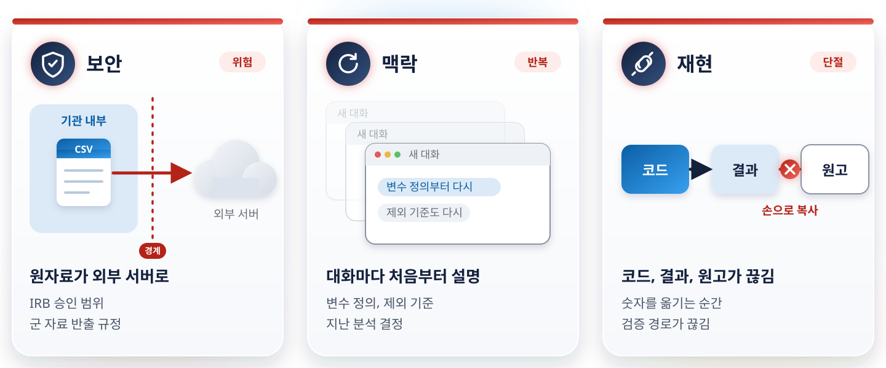
1. AI 활용 방식
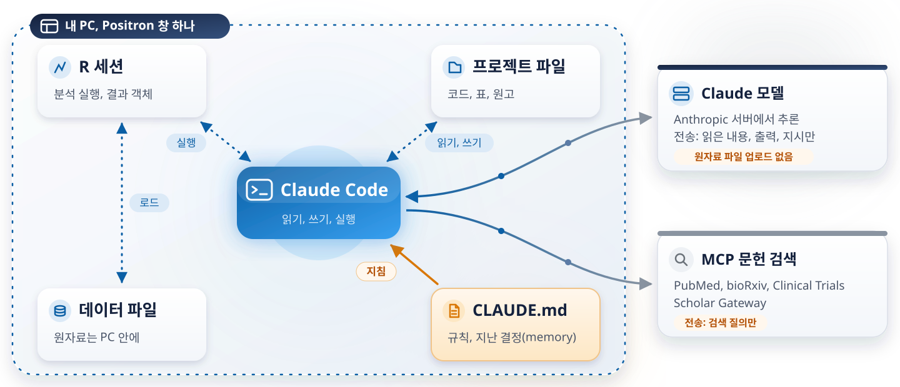
1. AI 활용 방식
① 탐색
코드북, 변수명, 자료형, 결측 파악
구조만 읽음(행 단위 출력 금지)
② 가설
선행 연구의 남은 의문에서 연구 질문
CLAUDE.md에 기록
③ 분석
코드 작성, 내 R 세션에서 실행
오류 수정, 스크립트 저장
④ 해석
결과 요약, 표와 그림 생성
수치는 연구자가 대조
⑤ 문헌
문헌 DB MCP로 검색, PDF 확보
인용 검증, 요약 정리
⑥ 원고
Methods, Results 초안
투고 양식으로 렌더
⑦ 리뷰어
지적별 대응 계획, 재분석
응답서 초안
모든 단계
에이전트: 작성, 실행, 정리
연구자: 질문, 대조, 채택 결정
1. AI 활용 방식
동기
선행 지방간 논문(AMHP 2025)에서 요산이 조종사에서만 위험 요인
대사증후군에서도 같은 패턴인가
설계
조종사 건강검진 2,604명 vs 국민건강영양조사 1,093명
남성 24–61세, 단면 비교
분석
유병률, 구성요소별 로지스틱 회귀
연령, 흡연, 음주, 운동 보정
주요 결과
대사증후군 11.1% vs 37.1%, aOR 0.30
혈압 구성요소만 조종사가 높음, aOR 2.12
2. 작업 환경
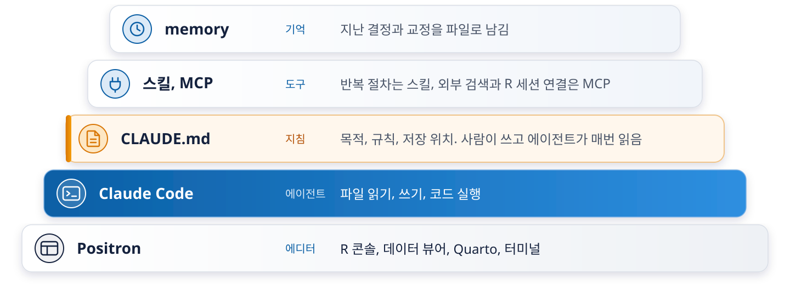
2. 작업 환경
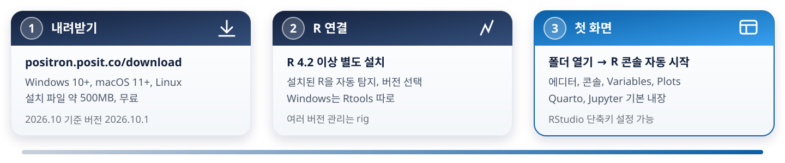
R 인터프리터 선택
오른쪽 위 인터프리터 메뉴에서 R 버전 지정
콘솔이 그 버전으로 시작
RStudio 사용자 설정
RStudio 단축키 켜기, 테마 선택
Ctrl+Enter 실행, Ctrl+Shift+M 파이프
확장 설치
Claude Code 확장 (다음 장)
Quarto, Jupyter는 이미 내장
2. 작업 환경
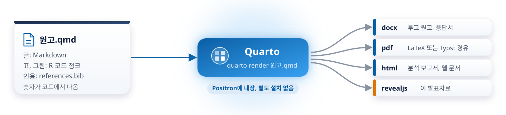
R Markdown의 후속
같은 팀(Posit)이 만든 다음 세대, Rmd 대부분 그대로 렌더
R에 묶이지 않음
Python, Julia도 같은 문서. 렌더 엔진이 R 패키지가 아니라 독립 프로그램
확장이 내장
revealjs, 책, 웹사이트, 상호참조, 탭이 패키지 없이 기본
2. 작업 환경
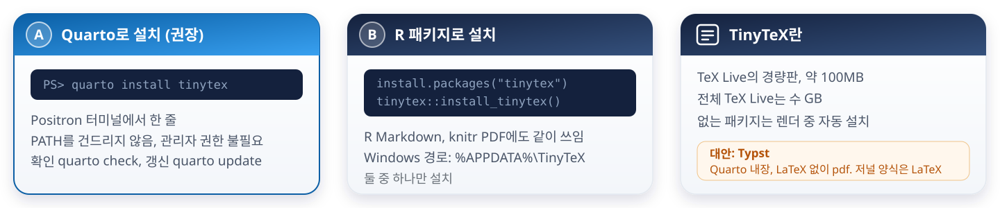
2. 작업 환경
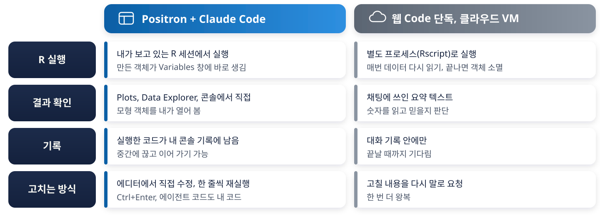
2. 작업 환경
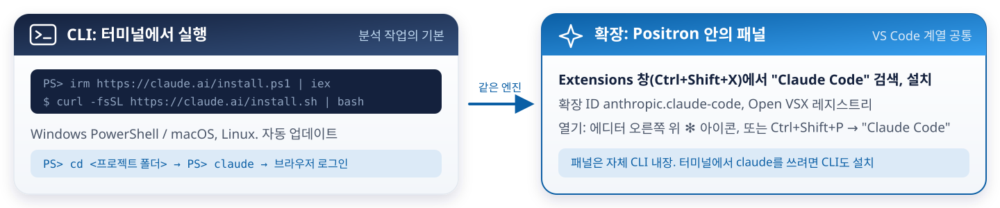
읽기
CLAUDE.md, 코드북, 스크립트
쓰기
스크립트, qmd, 응답서 초안
실행
쉘 명령, R 코드(Positron MCP)
권한
도구별 승인, 프로젝트별 설정
2. 작업 환경
1. Positron
설치 → 첫 실행 → 폴더 열기 → R 콘솔
2. Claude Code CLI
PowerShell 설치 한 줄 → claude → 로그인
3. 확장
Extensions에서 설치 → ✻ 아이콘으로 패널 열기
2. 작업 환경
CLAUDE.md
문제: 정의, 규칙을 세션마다 다시 설명
해법: 프로젝트 지침을 한 파일에, 자동으로 읽힘
스킬
문제: 같은 절차를 매번 말로 지시
해법: 절차를 파일로, 말투로 자동 발동
MCP
문제: 외부 검색 결과를 손으로 복사
해법: 에이전트가 도구를 직접 호출
memory
문제: 지난 결정을 다음 세션이 모름
해법: 결정과 교정을 파일로, 시작 때 읽힘
권한
문제: 에이전트가 무엇이든 할 수 있음
해법: 도구별 허용, 읽기 전용 폴더, 매번 승인
오케스트레이션
문제: 쓴 모델이 자기 글을 검토
해법: 작성과 검토를 다른 모델에, 공유 상태는 파일
2. 작업 환경
개념
역할과 효과
작성 요점
2. 작업 환경
Karpathy, X, 2026-01-26: “They don’t manage their confusion, don’t seek clarifications, don’t surface inconsistencies, don’t present tradeoffs, …” / “LLMs are exceptionally good at looping until they meet specific goals.”
forrestchang/andrej-karpathy-skills, CLAUDE.md (2026-01-27)
| 실패 양상 | 규칙 | 원문 |
|---|---|---|
| 가정을 숨기고 진행 | Think Before Coding | “Don’t assume. Don’t hide confusion. Surface tradeoffs.” |
| 요청보다 크게 설계 | Simplicity First | “Minimum code that solves the problem. Nothing speculative.” |
| 무관한 코드까지 수정 | Surgical Changes | “Touch only what you must. Clean up only your own mess.” |
| 검증 없이 완료 선언 | Goal-Driven Execution | “Define success criteria. Loop until verified.” |
사례 레포 CLAUDE.md의 같은 자리
2. 작업 환경
3 ## 프로젝트 개요
5 상태: 데이터 전처리 완료, 기초 및 최종 분석 완료, Quarto 분석 보고서 작성 완료
9 ## 목적
20 ## 역할
26 ## 행동 규칙
39 9. 모든 수치 결과는 그 도출 과정을 문서에 포함
41 ## 코딩 규칙
95 ## 윤리적 제약
129 ## 생성 파일 저장 공간2. 작업 환경
253 8. 대사증후군 (Metabolic Syndrome, MeTS) 진단 기준
255 - 복부비만 : 남성: ≥ 90cm / 여성: ≥ 85cm (허리둘레): mets_c1
256 - 중성지방 : ≥ 150 mg/dL 또는 이상지질혈증 약물 복용 중 :mets_c2
257 - HDL : 남성: < 40 mg/dL / 여성: < 50 mg/dL 또는 약물 복용 중 :mets_c3
258 - 혈압 : 고혈압 약물 복용중 또는 수축기 혈압 ≥ 130 또는
259 이완기 혈압 ≥ 85 :mets_c4
260 - 공복혈당 : ≥ 100 mg/dL 또는 당뇨병 약물 복용 중 :mets_c5mets_c1–mets_c5가 CLAUDE.md에서 코드로 그대로2. 작업 환경
폴더: 사람과 에이전트의 자리를 나눔
airforce-fatty-liver/
├── code/agent_bot/2026-03-19/ … 08-16/
├── quarto/user/ # researcher
├── quarto/agent_bot/YYYY-MM-DD/
├── data/derived-data/ # read-only
└── references/agent-downloaded/권한: 쓸 수 있는 도구와 폴더의 경계
Bash(rm -f *.pdf)가 남아 있었음2. 작업 환경
개념
.claude/skills/<이름>/SKILL.md 파일 하나역할과 효과
작성 요점
2. 작업 환경
사례 레포의 2026-08-16 검증 절차를 SKILL.md로 옮기면 (가상 예, 실제 파일 아님)
---
name: verify-numbers
description: 원고, 답변서에 넣을 수치를 분석 데이터셋에서 다시 계산해 대조.
"수치 확인", "숫자 맞는지", "검증 돌려", "답변서 숫자" 요청 시 사용.
---
1. 대조할 수치를 문서에서 뽑아 표로: 문서 / 위치 / 값
2. `Rscript code/agent_bot/<날짜>/verify-numbers.R` 실행
분석은 바꾸지 않고 같은 데이터셋에서 재계산
3. 판정: 일치 / 불일치 / 확인 불가. 불일치는 고치지 않고 보고만
4. 결과: `output/agent_bot/<날짜>/verify-numbers.md`2. 작업 환경
| CLAUDE.md | 스킬 (SKILL.md) | |
|---|---|---|
| 읽히는 때 | 세션마다 항상 | 요청이 발동 문구와 맞을 때만 |
| 담는 것 | 늘 적용되는 것: 목적, 역할, 정의, 규칙 | 한 작업의 절차: 순서, 체크리스트, 출력 형식 |
| 개수 | 프로젝트당 하나 | 작업당 하나, 여러 개 |
| 넣는 기준 | 모든 작업에 해당하는가 | 같은 절차를 세 번째 시키는가 |
사례에서
2. 작업 환경
개념
역할과 효과
작성 요점
2. 작업 환경
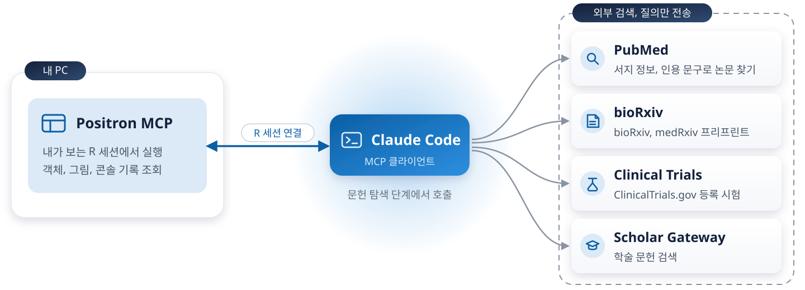
2. 작업 환경
개념
역할과 효과
작성 요점
2. 작업 환경
MEMORY.md가 색인2. 작업 환경
개념
역할과 효과
작성 요점
2. 작업 환경
CLAUDE.md 하나
CLAUDE.md = AGENTS.md
공유 상태: memory/, review/, git
오케스트레이터 둘
작성: Claude Code(Claude Fable 5.1)
검토: Copilot CLI(GPT-6.0 Astra)
워커 둘
작성, 검증: Claude Opus 5.5
독립 검토: GPT-5.6 Terra(Codex CLI)
run-worker.ps1: Terra가 한도, 오류로 실패하면 Opus로 재실행, 실제 수행 모델 기록2. 작업 환경
재현
숫자가 코드에서 나옴. 원고 수치를 스크립트로 재계산
추적
날짜 폴더, 대화 로그, memory. 몇 달 뒤에도 왜 그렇게 했는지 확인
속도
문헌 24편 서지와 PDF, Methods 초안, 응답서 초안을 세션 안에
일관성
정의와 규칙이 파일에 있어 세션이 바뀌어도 같은 기준
조건 1: 지침 파일
CLAUDE.md, 스킬, memory가 없으면 매 세션이 첫 세션
조건 2: 경계
읽기 전용 폴더, 집계만 출력, 매번 승인하는 명령
조건 3: 확인 지점
수치 대조, 해석 의심, 채택 결정은 사람. 3막에서 하나씩
3. 사례: 대사증후군 논문
프롬프트
내가 에이전트에게 한 말
에이전트가 한 일
읽고, 코드를 쓰고, 실행하고, 고친 것
내가 확인한 것
고르고, 대조하고, 빼기로 한 것
3. 사례: 대사증후군 논문
프롬프트
코드북과 분석 데이터셋 구조 요약
에이전트가 한 일
names(), class(), levels()만 읽음wt_itvex, psu, kstrata)mets_c1–mets_c5: CLAUDE.md, 코드북, 코드에서 같은 이름내가 확인한 것
URATE mg/dL, 원고 표는 μmol/L (×59.48)GLUC mg/dL, 원고 표는 mmol/L (÷18.02)C_) 7개는 다른 범주3. 사례: 대사증후군 논문
프롬프트
현재 02-afhe-khanes-analysis-script.R 수행 내요 검증 및 결과 요약. output 파일 생성하지 않음.
에이전트가 한 일
포화 모델이 작성되어 있으나, 다중공선성 위험이 있어 결과 해석 시 주의 필요
demo_tbl에 MeTS 기준 항목이 포함되지 않음 → 의도적인지 확인 필요
내가 확인한 것
3. 사례: 대사증후군 논문
맥락
에이전트가 한 일
내가 확인한 것
3. 사례: 대사증후군 논문
프롬프트
URATE와 GLUC에 대해 연구목적 4번에 대한 분석 실시
에이전트가 한 일
URATE, GLUC / 집단별 다중선형회귀 + 상호작용이 방향으로 진행할까요? 아니면 다른 접근(예: 매개분석, 경로분석 등)을 원하시는지 알려 주세요.
내가 확인한 것
현재 방향으로 진행한 다음 매개분석(BMI → URATE/GLUC → MeTS) 방향 분석 실시
RQ4에서 mediation analysis 결과는 추가하지 않을 예정
3. 사례: 대사증후군 논문
프롬프트
RQ1 로지스틱 회귀. MetS와 구성요소 5개, 보정 변수 연령, 흡연, 음주, 운동
에이전트가 한 일
code/agent_bot/YYYY-MM-DD/에 저장내가 확인한 것
GROUP2)AGE, SMOKING, ALCOHOL, EXERCISE3. 사례: 대사증후군 논문
시도 1
mediate() 호출 → object 'fm_med' not found
틀린 진단
“SAME data object” 가설로 수정 → object 'fm_a' not found
맞는 진단
“captures the model call env” → eval(bquote(...))로 적합 → “Done.”
3. 사례: 대사증후군 논문
프롬프트
knit 실행 시 오류. 분석 결과는 현재 작업공간에 저장된 결과를 기반으로 통계량 값들을 추출해서 테이블을 재생성하고, …
에이전트가 한 일
문제를 파악했습니다. 세 가지 핵심 이슈입니다:
- YAML 안
#주석 → 파싱 오류- knit 환경은 세션과 독립 →
ft_urate,ft_gluc,ft_med객체가 없음. 청크 안에서 데이터로부터 직접 재생성 필요fig_path→ 저장된 PNG를knitr::include_graphics()로 삽입
내가 확인한 것
med_summary): 에이전트의 절충, 수용3. 사례: 대사증후군 논문
프롬프트
Table 1을 Lancet 양식으로
lancet_ft()는 내가 먼저 작성(code/funs/helpers.R)에이전트가 한 일
tbl_summary() → as_flex_table() → border_remove(), hline_top()emmeans() 추정 → patchwork 조립DiagrammeR::grViz()내가 확인한 것
The underlying models, estimates and contrasts are untouched; only the display changes.
3. 사례: 대사증후군 논문
프롬프트
전체 결과 해석
에이전트가 한 일
URATE, GLUC와 MetS의 연관: 조종사에서 더 강함내가 확인한 것
3. 사례: 대사증후군 논문
사용자, msg[18]
… 맨 처음 로지스틱 회귀모형 결과 보정 후에도 대사증후군에 대한 공군 집단의 오즈비가 일반 인구 집단보다 높게 나타난 사실과 어떻게 연결을 할 수 있지?
Positron Assistant (Claude Sonnet 4.6), msg[19]
… 조종사 집단에 내재된 건강 근로자 효과(Healthy Worker Effect)로 수렴하는 공통 설명이 가능합니다.
사용자, msg[20]
결과 해석이 이상한데? 로지스틱 회귀모형 결과는 작업 공간의 tbl_result_mets_lbtest 결과를 확인해.
Positron Assistant, msg[21]
확인했습니다. 이전 해석에 오류가 있었습니다. 정확하게 재정리합니다.
3. 사례: 대사증후군 논문
프롬프트
응답서에 약속한 숫자를 원고에 넣기 전에 전부 재계산
에이전트가 한 일
verify-numbers.R: 약물, 유병 비율 / BMI 분포 / SI 변환 후 계수Nothing here changes any analysis; it recomputes from the same analysis dataset the manuscript already uses.
내가 확인한 것
verify-numbers.R재실행: 약물/유병률 12개, BMI 6단계, Table 4 SI 계수 전부 일치
knitr
error = TRUE문서는 exit code만으로 성공을 판단하면 안 됨
3. 사례: 대사증후군 논문
프롬프트
references.md 15편 + 추가 검색
PDF 확보, 요약, 본 연구와의 연결
에이전트가 한 일
PubMed MCP로 메타데이터 조회, DOI 명시
PDF 자동 확보(Europe PMC, 출판사), 파일명 규칙, references.bib
references-summary.md: 24편 그룹별 요약
결과: 25편 중 20편 PDF 확보(업로드 포함)
내가 확인한 것
다운로드 불가 4편: 봇 차단 2, 러시아어 전용 1, closed access 1
출판사 원본 PDF 13개 직접 업로드
업로드 파일 중 목록 밖 논문 1편 확인(Kim 2022)
3. 사례: 대사증후군 논문
프롬프트
“조종사 집단의 요산과 대사증후군 연관 선행 연구 검색, DOI와 함께”
1. MCP 호출
PubMed, Scholar Gateway
2. 결과 표
저자, 연도, 저널, DOI
3. DOI 확인
링크가 실제로 열리는지 사람이 확인
3. 사례: 대사증후군 논문
모든 항목에 DOI
머리말: “DOI 링크는 본 문서에 포함됨”
DOI가 없으면 “없음”과 PMID로 표기
인용 부분 발췌
CLAUDE.md: “문헌 인용 시 인용한 부분의 내용을 발췌”
본문 미확보 논문은 초록 범위 안에서만 인용
“본 연구와의 연결” 칸 필수
항목 구조: “목적 / 표본 / 핵심 결과 / 본 연구와의 연결”
rhee2015: “본 연구와 동일 직업집단(ROK 공군) 분석의 직접 선례”
CLAUDE.md, 하지 말아야할 규칙: “실제 출처와 대응하지 않는 AI 생성 인용을 사용하는 것.”
3. 사례: 대사증후군 논문
프롬프트
Statistical analysis 절, 수식 포함
에이전트가 한 일
05_statistical_analysis_methods.qmd 초안(2026-03-21)
Overview: R 버전, 패키지 인용, 검정 기준까지 작성
저자 문체 유지 qmd 원고(2026-05-09), qmd → docx 렌더
“… the largest adjusted p among those components, taken from Table 2; no reanalysis was required.”
내가 확인한 것
산문의 숫자는 글자: 표, 스크립트와 대조
“all p ≤ 0.009”가 Table 2 보정 p 중 최대인지
초안 R 4.5.2 → 출판본 V.4.5.3
3. 사례: 대사증후군 논문
프롬프트
저자의 문맥, 문체, 주장 등을 유지하면서 초안의 부족한 부분을 수정
진행하되 문장에 하이픈 사용 지양 (예:
--rather than ... --)
Abstract 300자 이내로 압축
에이전트가 한 일
manuscript-pilot-khanes-METS-revised.qmd 신규, 인용키 21개 검증
Abstract 299 단어, em-dash 제거
6번째 limitation 약 200 → 약 95 단어
세션 요약 memory §7에 “사용자 명시” 기준 기록
내가 확인한 것
em-dash 쓴 첫 시도 거부 → 재작성
“Discussion 재인용과 중복”으로 지워진 HWE 인용 5편 복원
해석 틀을 도입하는 문장에 근거가 없어지는 것은 중복 제거가 아님
복원 후 참고문헌 36편 불변, 복원 5편 번호 17–21
3. 사례: 대사증후군 논문
프롬프트
Reviewer 2 지적별 대응 계획
예: R2-14, 연령은 10년 구간인데 다른 변수는 왜 사분위인가
에이전트가 한 일
reviewer2-response-plan.md: 지적별 채택 논거, 폐기 논거
채택: 원고가 이미 인용 중인 rhee2015의 사분위 선례
사실이지만 이 표본에서만 성립하는 우연의 일치이며 사후 관찰임
응답서 초안 2026-08-15 → v2 2026-08-16
내가 확인한 것
1차 개정안에 절단값 일치표가 이미 들어가 있었음
폐기 사유 2개: 사후 관찰, 리뷰어가 묻지 않은 쟁점
사실이어도 설계 시점의 이유가 아니면 뺌
3. 사례: 대사증후군 논문
1. 실행 전 승인
“User declined to execute tool.” → 범위 다시 지정
2026-03-19, Positron Assistant
2. 데이터 노출
행 단위 출력 금지, 집계값만, 5명 미만은 “5 미만”
이 발표의 CLAUDE.md 화면 노출 규칙
3. 빼는 결정
“응답서에 넣으면 사후 정당화로 읽힘”
2026-08-14, Claude Code
4. 저자 검토
“해석 틀을 도입하는 문장에 근거가 없어지는 것은 중복 제거가 아님”
2026-08-16, Claude Code
4. 정리
에이전트에게 간 것
코드 작성과 실행
표와 그림
문헌 정리
숫자 검증 스크립트
초안
사람에게 남은 것
질문
설계 선택
해석
인용 판단
최종 검토
4. 정리
1. CLAUDE.md 한 장
6블록: 목적과 상태, 역할, 행동 규칙, 코딩 규칙, 윤리 제약, 저장 규칙
교정이 생기면 한 줄씩 추가
2. 산출물 폴더 나누기
code/{user,agent}, output/{user,agent}/YYYY-MM-DD
에이전트가 언제 무엇을 만들었는지 추적
3. 숫자 검증 스크립트 하나
원고의 숫자를 같은 데이터에서 다시 계산
예: verify-numbers.R
4. 정리
묻지 않고 고른다
“오즈비”가 가리킨 두 표 중 하나를 골라 서사까지 작성
“이전 해석에 오류가 있었습니다”
그럴듯한 용어
척도 의존성을 이렇게 부름
“이는 통계학에서 잘 알려진 ”non-collapsibility” 문제입니다.”
완료 선언
공분산을 뺀 SE 손계산 뒤
“완료되었습니다!”
4. 정리
[여기에: 스타터킷 주소] QR
CLAUDE.md 템플릿 / 폴더 구조 / 검증 체크리스트 / 프롬프트 치트시트
1. 실행 전 승인
“User declined to execute tool.” → 범위 다시 지정
2026-03-19, Positron Assistant
2. 데이터 노출
행 단위 출력 금지, 집계값만, 5명 미만은 “5 미만”
이 발표의 CLAUDE.md 화면 노출 규칙
3. 빼는 결정
“응답서에 넣으면 사후 정당화로 읽힘”
2026-08-14, Claude Code
4. 저자 검토
“해석 틀을 도입하는 문장에 근거가 없어지는 것은 중복 제거가 아님”
2026-08-16, Claude Code
Positron + Agentic AI 2026